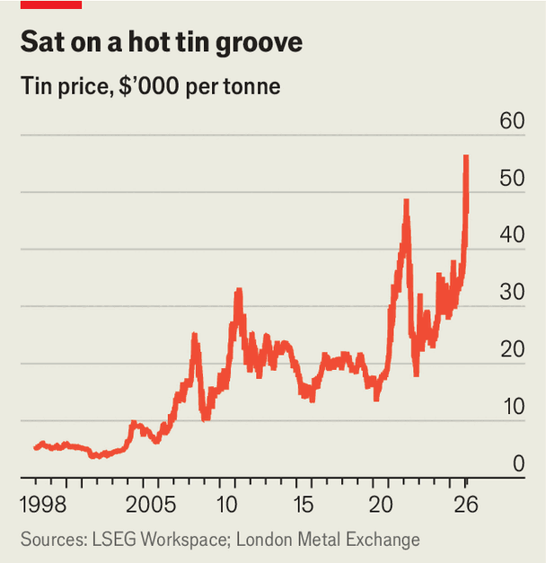
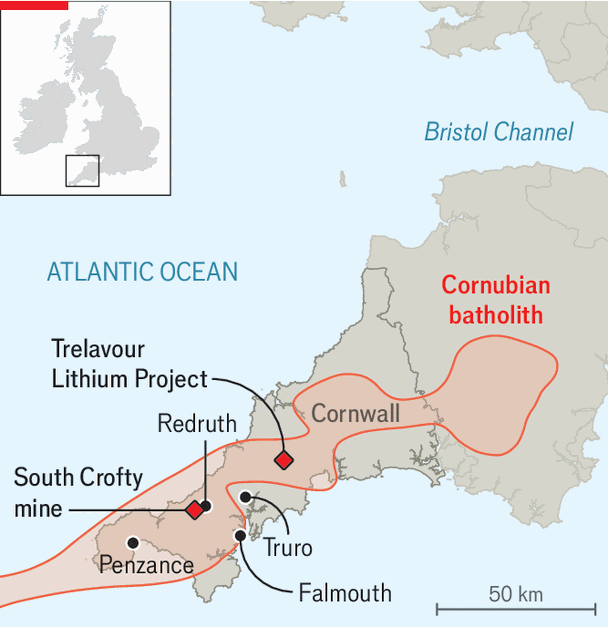

Britain | Cornish nice dream
Tin mining is making a surprise return to Cornwall
Higher prices and national security are fuelling investment
February 12th 2026
“IF YOU LOOK down a hole anywhere in the world, you’ll find a Cornishman digging at the bottom,” goes the local joke. Such was the deep-rooted connection between Cornwall and mining. In the Bronze Age the Phoenicians sought Cornish tin, and for much of the Industrial Revolution the area provided nearly all of the world’s supply. Today it produces none.
That is set to change. South Crofty, near Redruth, was Britain’s last tin mine, finally done in by low prices in 1998. It is now being resuscitated by Cornish Metals, a London-listed company, and is scheduled to begin commercial operation in 2028—becoming the only mine in Europe that primarily extracts tin. The return of tin mining to the western tip of England has had a number of false starts. This time seems different, for two reasons.

First, the stuff is now worth a lot more. In January the metal hit a record high of $56,600 per tonne on the London Metal Exchange (see chart), nearly double its average price in 2024 and (after adjusting for inflation) more than five times what it was worth when South Crofty closed. Once used for bronze axes or cans, tin is now in demand as a solder in electronic circuits needed for booming sectors including AI, solar power, electric vehicles and defence.
Some of the froth may not last. Global investors have piled into commodities as a hedge in uncertain times, driving up the price of tin. But Panmure Liberum, a bank, projects prices above $23,000 per tonne until at least 2029. This makes South Crofty look like a safe bet: a preliminary economic assessment calculated that the mine would be profitable at $15,000 per tonne. And thanks to the Cornubian batholith, a huge body of granite that runs through Cornwall (see map), the tin at South Crofty is the third- or fourth-highest grade found anywhere in the world, notes Steve Holley of Cornish Metals.

Second, tin has fresh importance for national security. Tin was included in the government’s critical-mineral strategy, published in November. Currently all of Britain’s tin is imported. Nearly three-quarters of the global supply comes from China, Indonesia, Myanmar and Peru. Britain is reluctant to rely on these sources when there is plenty of tin on its doorstep. Cornish Metals was granted £29m ($36m) from the National Wealth Fund in January 2025 to support the project.
Yet extracting tin does not by itself solve the national-security problem. Britain lacks facilities to process it. Most of the world’s tin is smelted in South-East Asia, but Nathan Trotter, an American company, is building a new smelting facility in Virginia, with funding from the defence department, and South Crofty has caught the American government’s eye. Its Export-Import Bank may invest $225m in the mine to ensure a reliable supply of tin.
The British government sees wider benefits, too. The area around Redruth was once referred to as “the richest square mile in the world”, says Fawzi Hanano, development officer at Cornish Metals. North Redruth is now in the 10% of most-deprived neighbourhoods in England. South Crofty may create a modest 300 direct jobs, and 1,000 indirect ones in the area. Mr Holley talks of it possibly being a “stepping stone” for further sites. Local residents are less confident. “I don’t know where the profits will end up, but probably not in Redruth,” remarks Guy Hoy, a bookseller.
The government hopes tin can be part of a broader mining renaissance in the area. It is supporting lithium projects in Cornwall, home to the largest lithium deposits in Europe, which were briefly mined during the second world war. It is targeting annual domestic production of 50,000 tonnes of lithium (another critical mineral, used in batteries) by 2035. Cornish Lithium has already demonstrated the mining and refining of battery-grade lithium hydroxide at its Trelavour site. The firm is aiming to begin commercial production in 2029.
The tin and lithium projects are collaborating with the Camborne School of Mines near Falmouth, part of the University of Exeter. They could provide work for graduates who now have to look abroad for jobs. For all the local scepticism, mines offer an opportunity to re-establish a hub of industrial expertise in Cornwall. ■
For more expert analysis of the biggest stories in Britain, sign up to Blighty, our weekly subscriber-only newsletter.